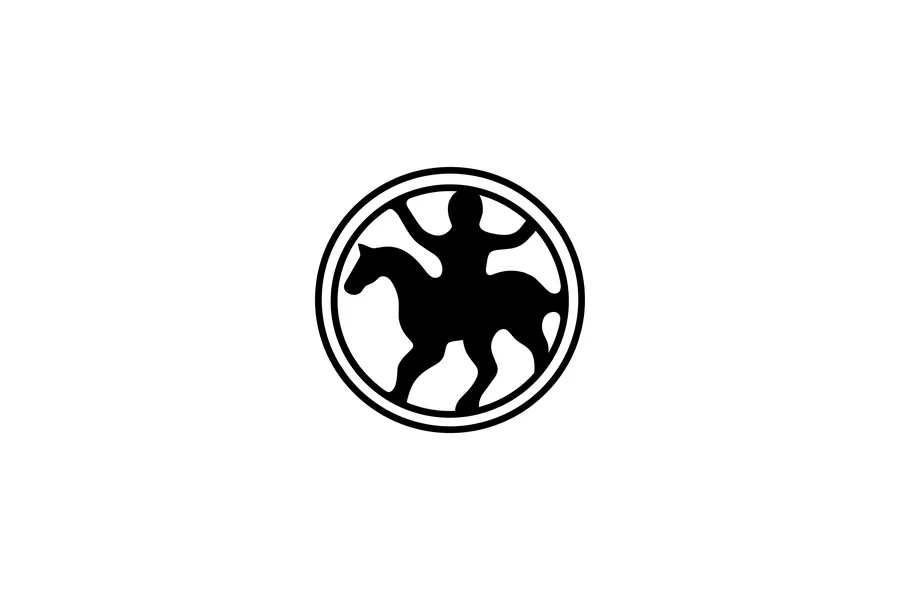
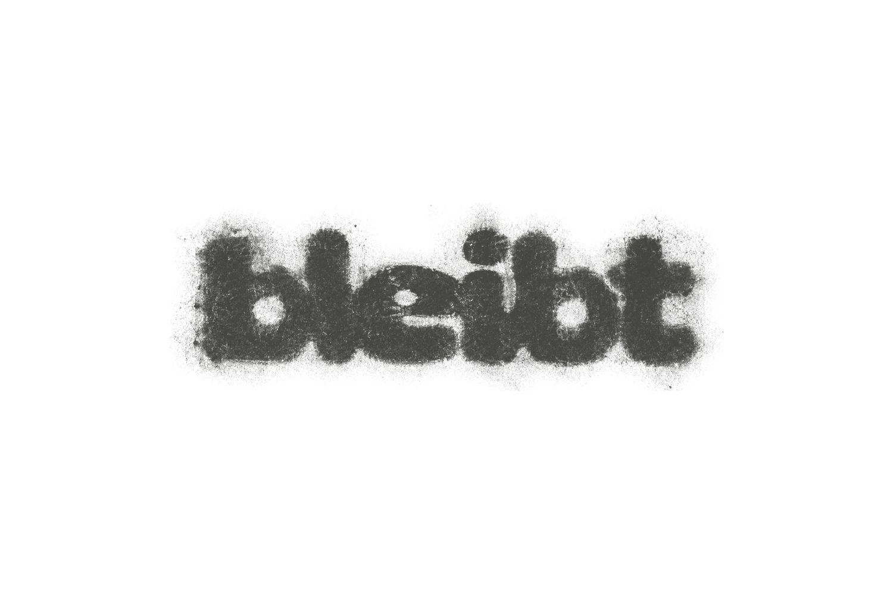
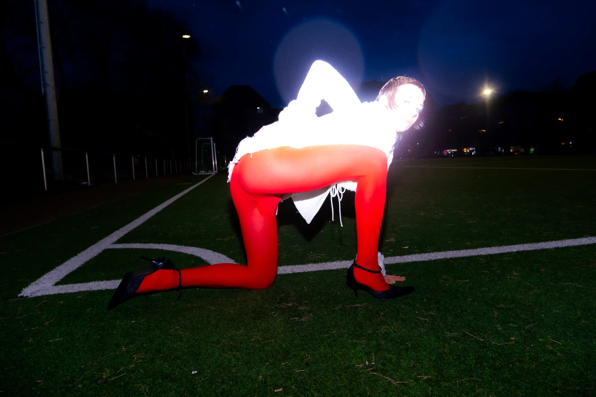

Home
Works
Index



Ballanheim
brand identity, photography and web
bleibt
brand concept, packaging and 3D
Polish Girl
styling, art direction and photos
Press photos for Gbenga
photography and styling
BByaga
photos for a new clothing collection
Ulia
winter photoshoot